NOE M9 · stan istniejący · 2026-11-15
Rzeczywiste zrzuty z Chrome w istniejącej piaskownicy agenta. To materiał „przed”, nie makiety proponowanego wyglądu. Kliknij obraz, aby obejrzeć go w pełnym rozmiarze. Bez wykonywania akcji, rzutów i zapisu dokumentów. Próbka obejmuje 14 widoków, nie wszystkie zakładki i przepływy.
Okno użycia otwarto bez uruchamiania aktywności i z minimalną konfiguracją: pokazuje powłokę, nie pełny przepływ użycia broni. Czat i dymki wymagają oddzielnej próby. Manifest i rejestry · Pełny zakres audytu M9
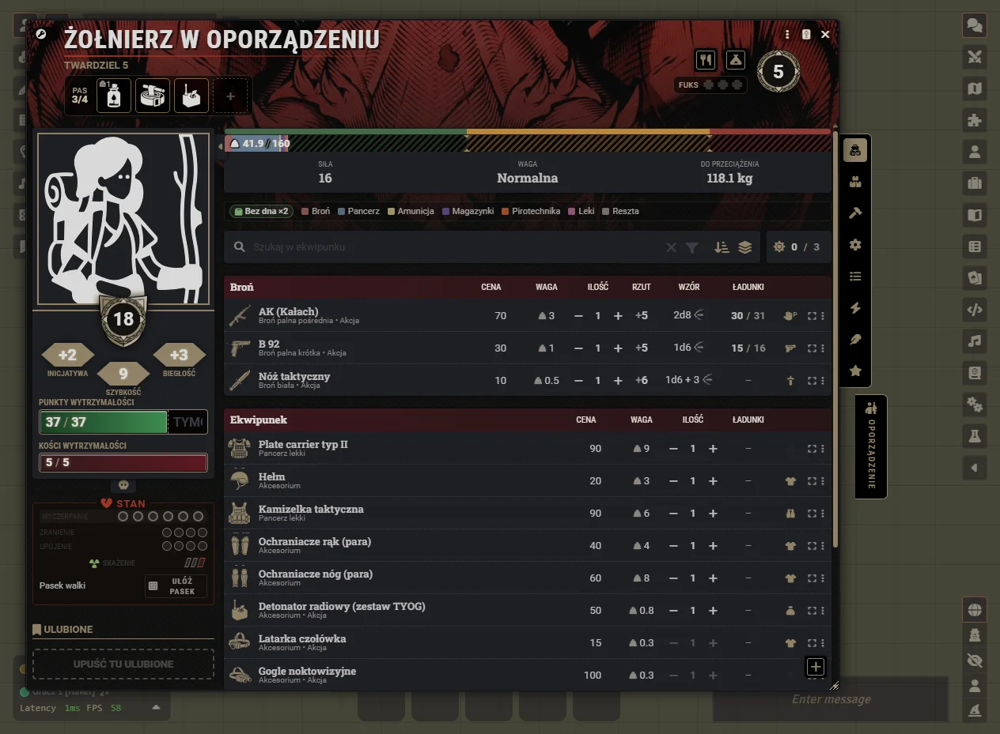
PC · ekwipunek
NeuroshimaCharacterSheet · filtr: sepia(0.15) contrast(1.05) brightness(0.85)
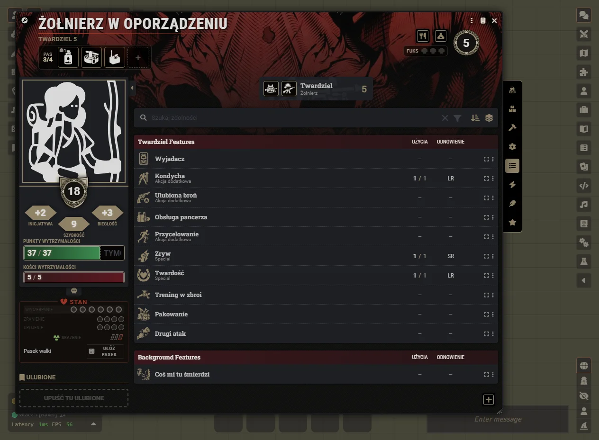
PC · zdolności
NeuroshimaCharacterSheet · filtr: sepia(0.15) contrast(1.05) brightness(0.85)
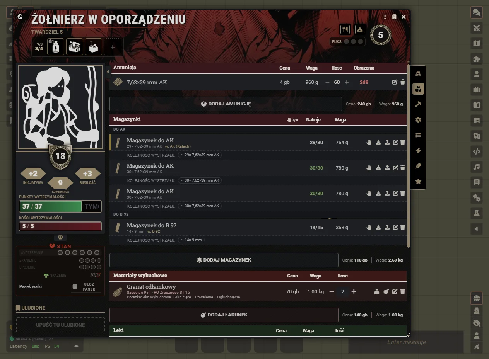
PC · zasoby
NeuroshimaCharacterSheet · filtr: sepia(0.15) contrast(1.05) brightness(0.85)
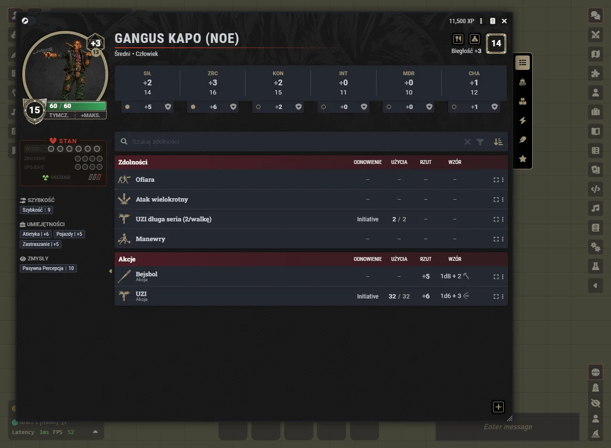
BN · zdolności
NeuroshimaNPCSheet · filtr: none
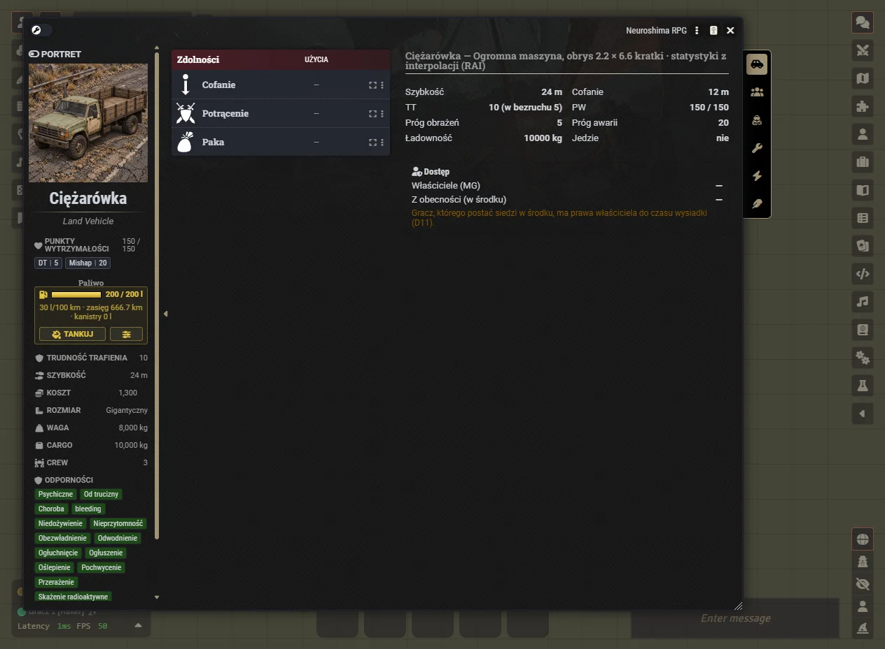
Pojazd · przegląd
KartaPojazdu · filtr: none
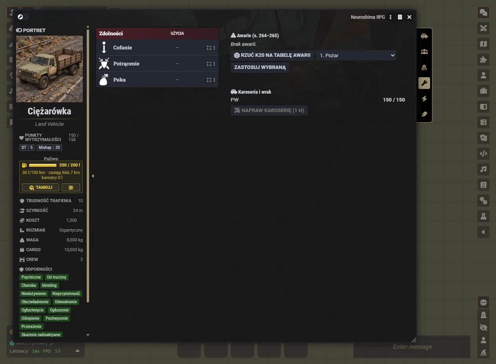
Pojazd · awarie
KartaPojazdu · filtr: none
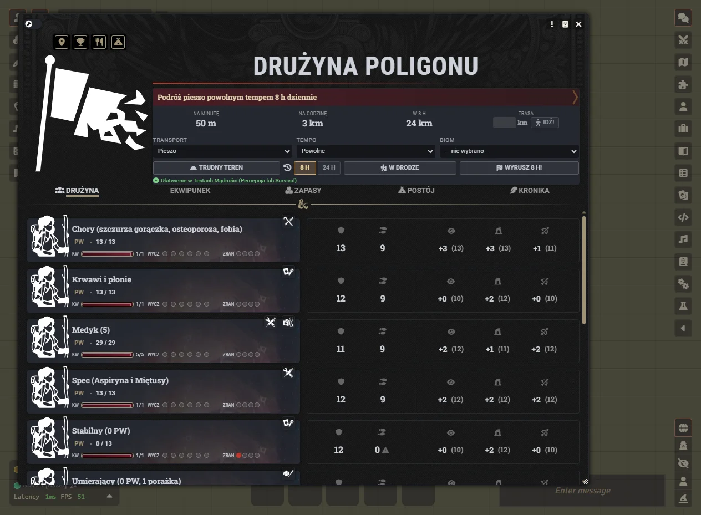
Drużyna · członkowie
NeuroshimaGroupSheet · filtr: none
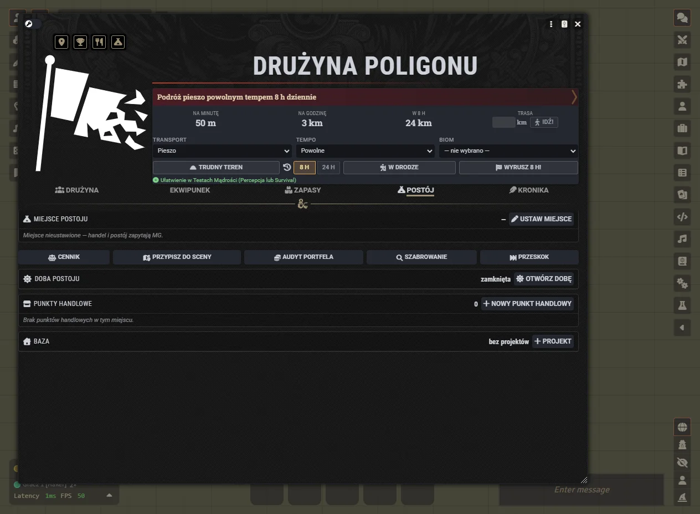
Drużyna · postój
NeuroshimaGroupSheet · filtr: none
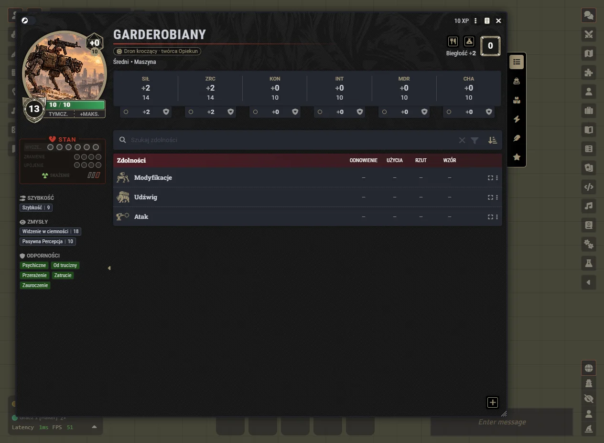
Dron · wariant BN
NeuroshimaNPCSheet · filtr: none
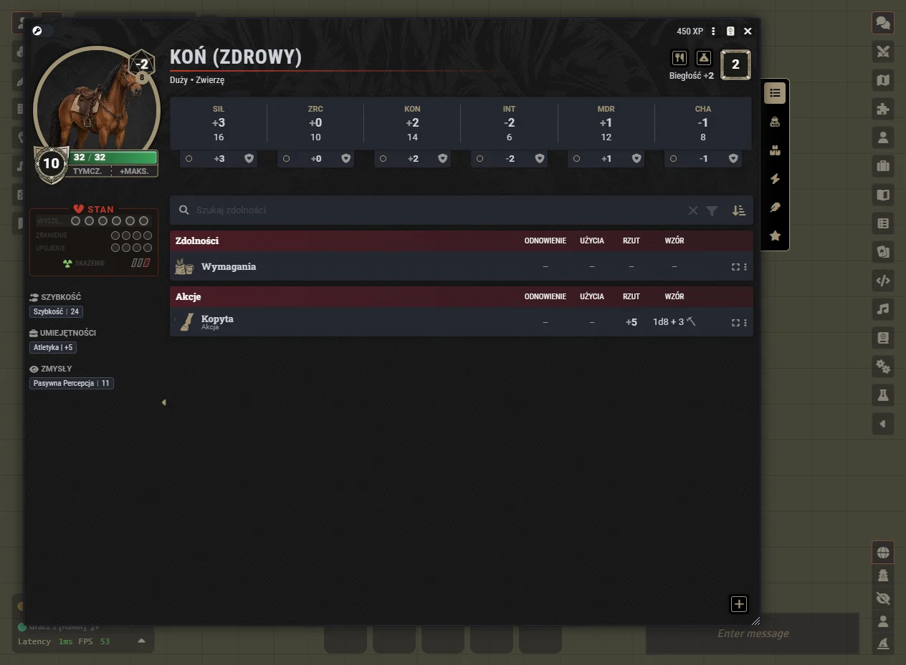
Wierzchowiec · wariant BN
NeuroshimaNPCSheet · filtr: none
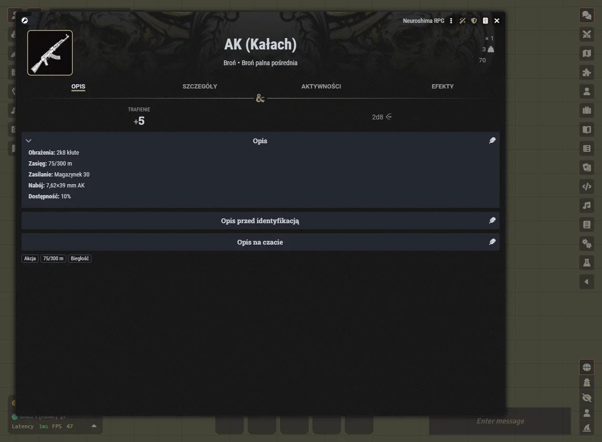
Przedmiot · broń
ItemSheet5e · filtr: none
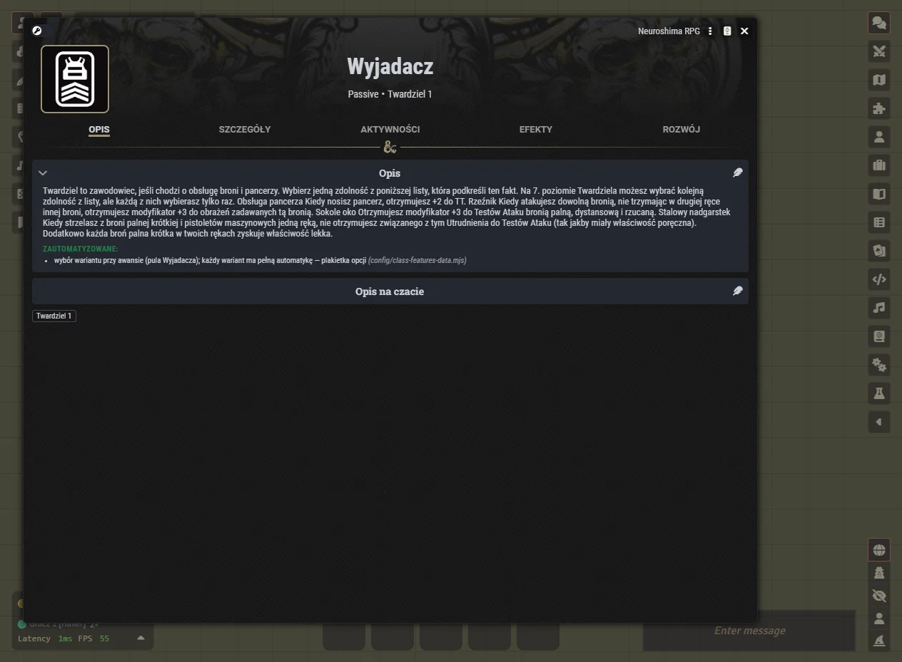
Przedmiot · zdolność
ItemSheet5e · filtr: none
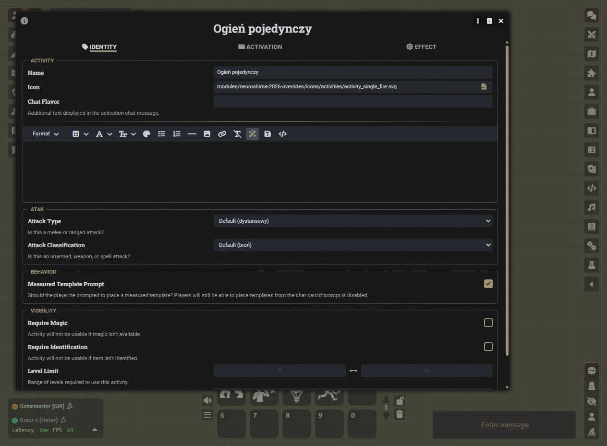
Edytor aktywności
AttackSheet · filtr: none
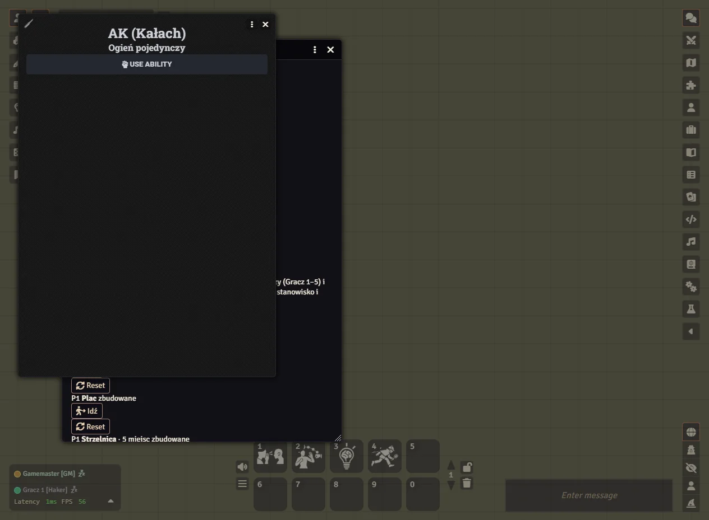
Okno użycia · sama powłoka
ActivityUsageDialog · filtr: none